Разбираем, что заказывают AI-креаторам, сколько это стоит и с чего начинают наши студенты. Потом смотрим, какая нейросеть за что отвечает. В конце считаем подписки: какую взять под свою работу и во сколько она обойдётся.
Что заказывают, сколько платят и как выглядит путь от первой картинки до первого заказа.
AI-креатор продаёт решённую визуальную задачу бренда, а не картинки. Нейросеть делает варианты, а креатор принимает решения: что сделать, в каком стиле, что выбрать и как сдать. За эти решения и платят.
То, что раньше делали фотограф, дизайнер и монтажёр, теперь может закрыть один человек с нейросетями. Технические навыки при этом занимают около 20% работы. Остальное — насмотренность, концепция, отбор и вкус. Поэтому сильнее всех в нейросетях фотографы, режиссёры и видеографы: они уже умеют ставить свет, кадр и историю.
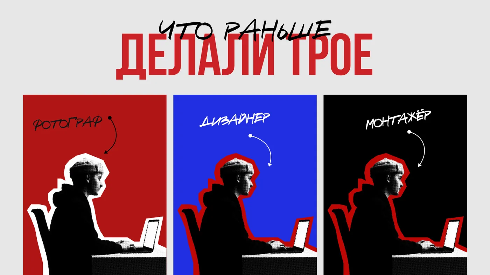
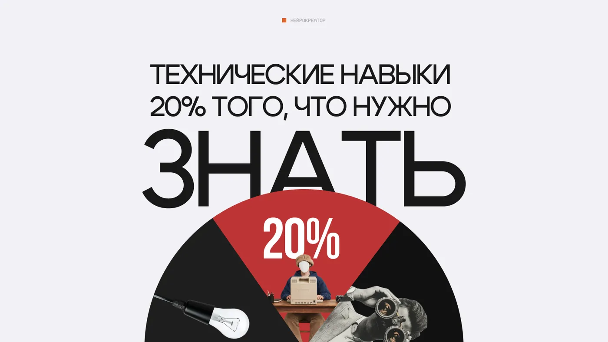
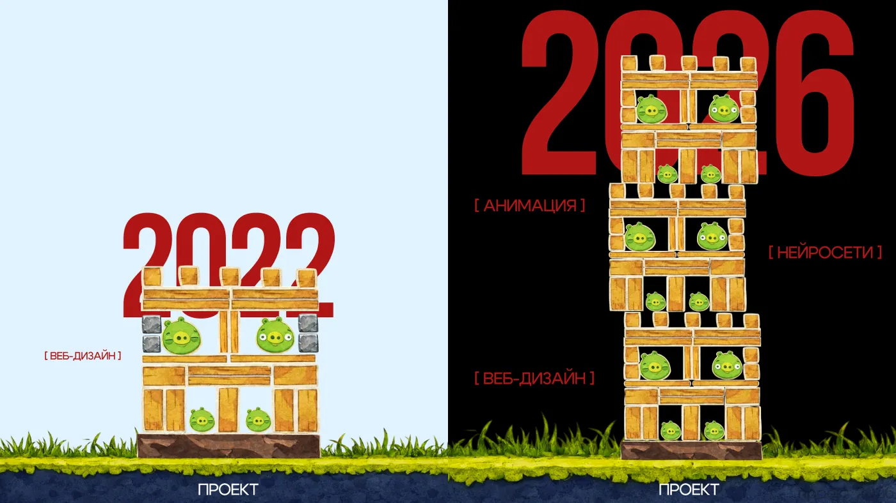
Всё, что заказывают AI-креатору, укладывается в три семейства: графика, фотосессия и видео. У каждого заказа есть вторая ось — реализм или иллюстрация. Предметку лимонада можно решить как фото на мху или как плоскую иллюстрацию бутылки среди ягод для упаковки. Услуга одна, стиль разный.
| Тип проекта | Пример задачи | Что на выходе |
|---|---|---|
| Графика | ||
| Одна картинка | Обложка анонса, пост, история | 1 кадр и 1–2 адаптации |
| Набор иллюстраций | Иллюстрации для статьи, лендинга или видео | Серия из 5–15 кадров в одном стиле |
| Key visual (KV) | Главный образ кампании, из него делают баннеры и наружку | KV и адаптации под форматы |
| Айдентика бренда | Визуальный язык: образы, палитра, стиль, мокапы | Лайт-брендбук и набор визуалов |
| Фотосессия | ||
| Предметная | Продукт в разных сетах без студии, карточки маркетплейса | Карточка продукта, hero и lifestyle |
| AI-модель | Создать лицо бренда и держать его в разных образах | Карточка модели и серия кадров |
| Съёмка с моделью | Смена одежды, окружения, позы, внедрение продукта | Серия кадров одной модели |
| Видео | ||
| Тематический ролик | Исторический, художественный или мемный ролик на 20–60 секунд | Ролик со звуком и титрами |
| Рекламный ролик | Продукт через рекламный приём, пэкшот в финале | Ролик и нарезки под площадки |
| Клип | Визуальный ряд под трек артиста | Клип или визуалайзер |
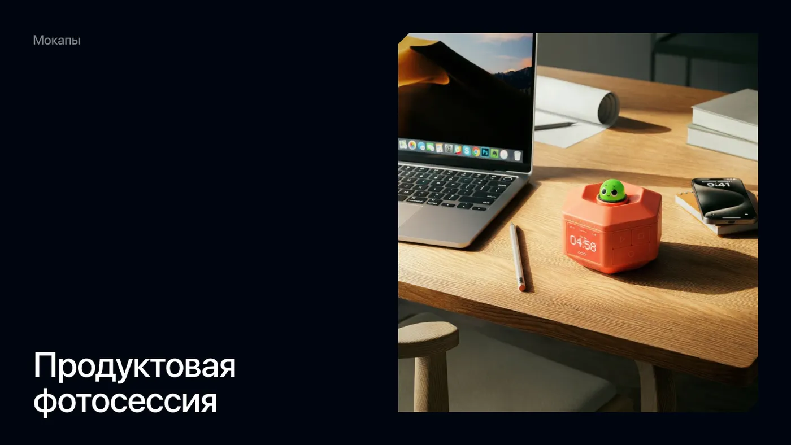
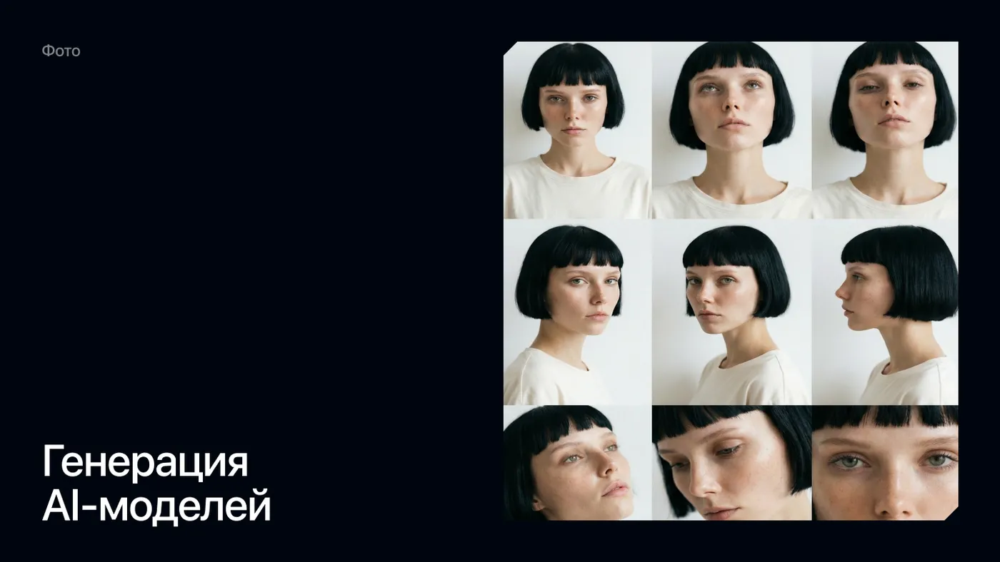
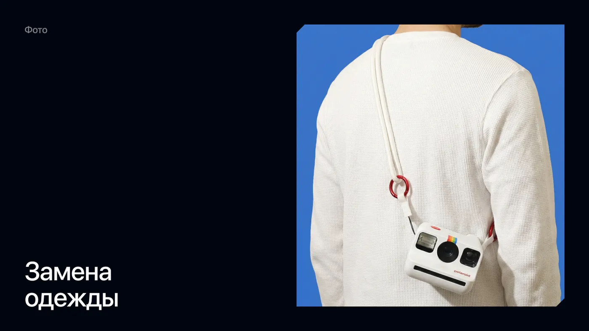
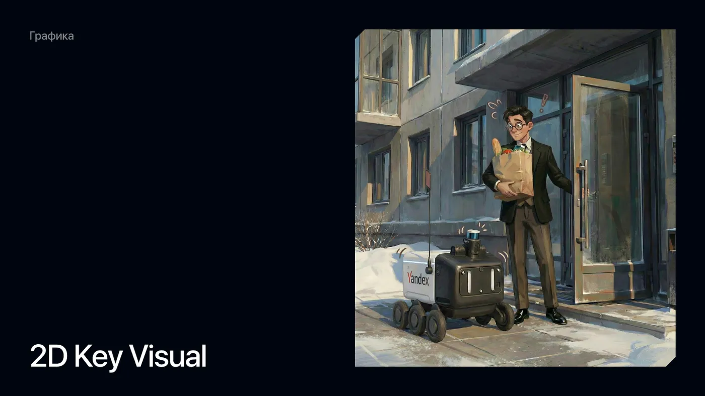
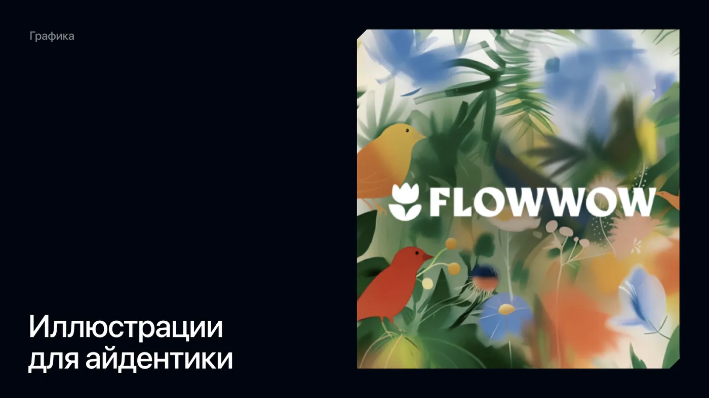
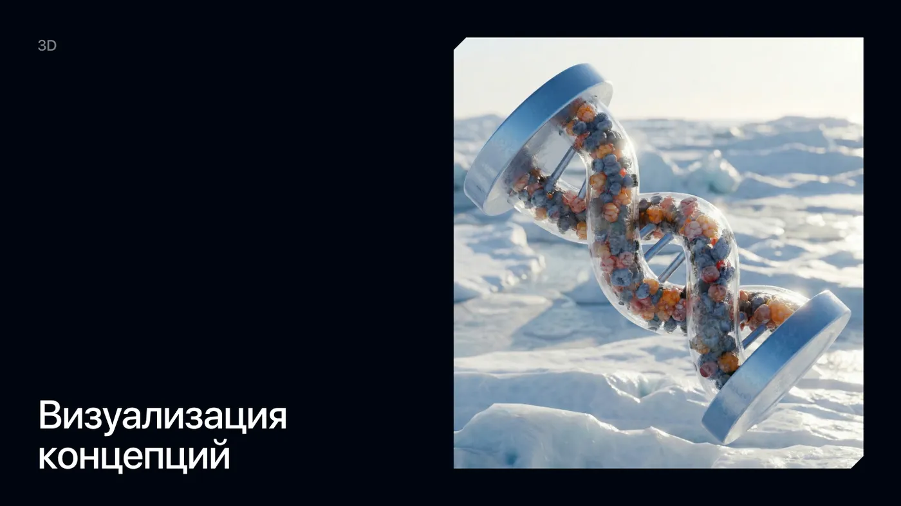
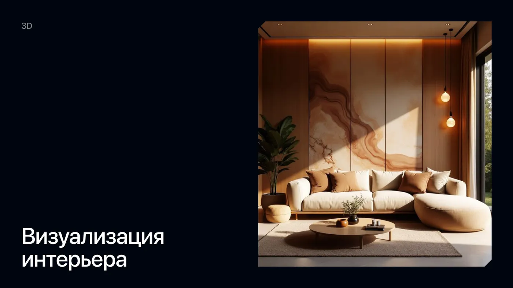
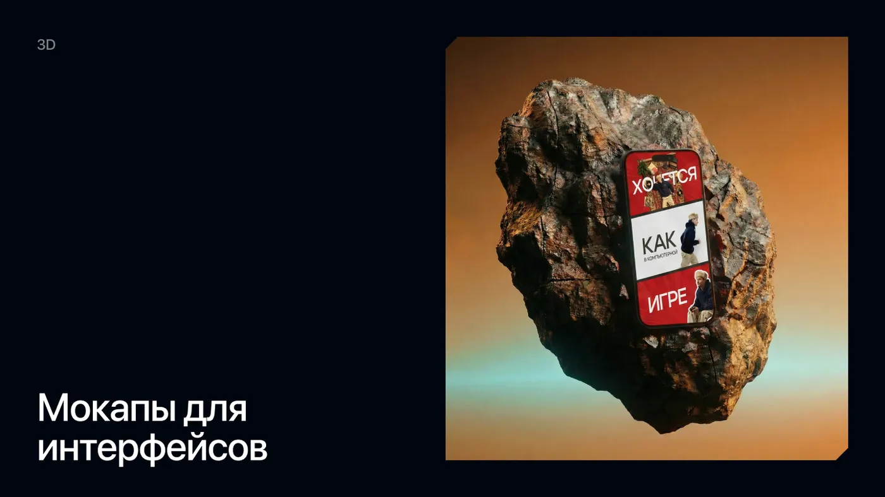
Вилки ниже взяты с сайта школы и студии Perasperadastra. Это ориентир для старта: рынок движется, поэтому перед первым заказом сверься с актуальными ценами.
| Услуга | Вилка | От чего зависит цена |
|---|---|---|
| Креативные ролики | 5–50 тыс ₽ | Длина, число шотов, звук, правки |
| Генерация концептов | 5–15 тыс ₽ | Число направлений и итераций |
| 3D-графика | 5–30 тыс ₽ | Сложность объекта, число ракурсов |
| Иллюстрации | 5–30 тыс ₽ | Одна или серия, стиль, адаптации |
| Фотоконтент для сайта | 5–25 тыс ₽ | Число кадров, единый стиль |
| Фотосессия с продуктом | 5–25 тыс ₽ | Число сетов, карточки, адаптации |
| Фотосессия с AI-моделями | 5–20 тыс ₽ | Число образов, одно лицо во всех кадрах |
| Мокапы | 1–5 тыс ₽ | Число сцен, сложность вставки |
Внизу вилки — один кадр или короткий ролик, один круг правок, один формат. Вверху — серия кадров, адаптации под форматы, несколько кругов правок и передача прав.
Большой проект для портфолио стоит дороже отдельной услуги. Обрати внимание на часы: генерация занимает меньшую часть, остальное — задача, стиль, отбор, правки, финализация и упаковка.
| Проект | Сколько работы | Цена на рынке | Что продаёшь потом |
|---|---|---|---|
| AI-фотосессия брендафотостиль, предметка | 10–20 ч | 5–50 тыс ₽ | Предметку, карточки, контент для сайта и соцсетей |
| AI-продуктпродукт, которого нет | 10–30 ч | 30–100 тыс ₽ | Концепты продуктов, KV, презентации идей |
| AI-видеорекламный или тематический ролик | 20–40 ч | 30–100 тыс ₽ | Рекламные ролики, ролики для соцсетей, клипы |
Цену считают от часов, а не от числа генераций:
Например, 18,5 часа × 1 100 ₽ ≈ 20 350 ₽ плюс расходы на подписки около 1 650 ₽ — получается 22 000 ₽ за средний пакет фотосессии. В расходы входит доля подписок на проект, а в надбавки — срочность, расширенное использование и дополнительные правки.
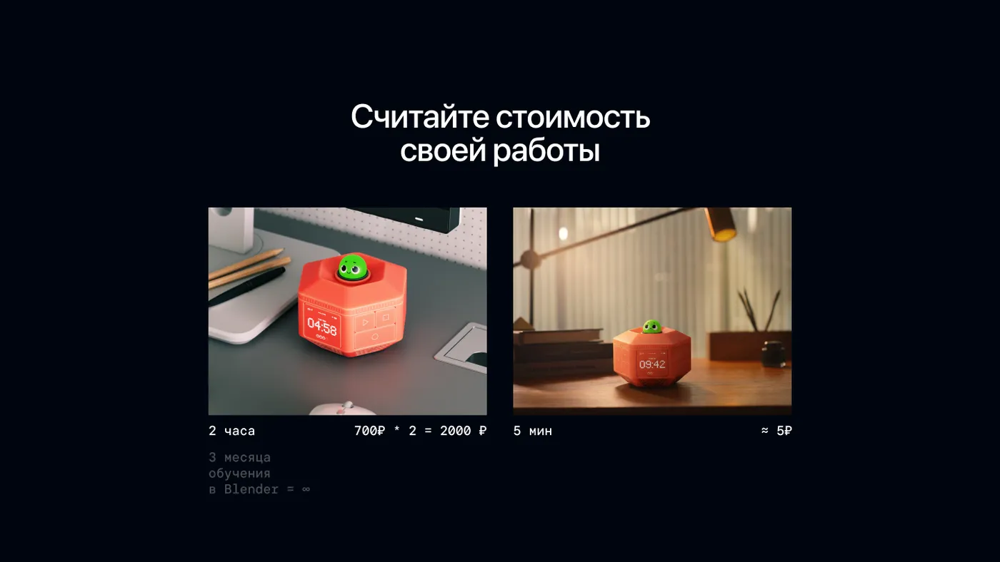
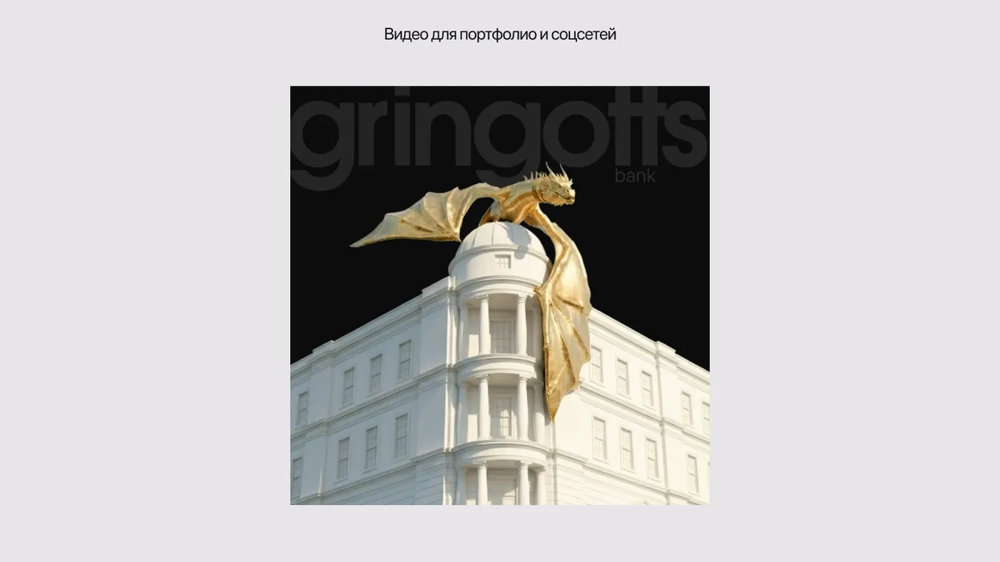
Выбери одно-два направления: от этого зависит, что класть в портфолио. Агентству нужны KV с адаптациями, селлеру — карточки и предметка, артисту — клип.
| Где | Что делаешь | Плюс | Что показать в портфолио |
|---|---|---|---|
| Студия, продакшн | Кадры и шоты по раскадровке арт-директора | Большие проекты, быстрый рост | Серии в заданном стиле, ролики |
| Агентствореклама, SMM | KV, адаптации, креативы под кампании | Поток задач, бренды | KV с адаптациями, рекламный ролик |
| Фриланс | Проекты целиком: от брифа до сдачи | Сам выбираешь клиентов и цену | Кейсы с задачей, процессом и результатом |
| In-houseбренд, селлер, медиа | Контент одного бренда потоком | Стабильность, глубина бренда | Предметка, карточки, серии для соцсетей |
| Свой контент | Авторские ролики, соцсети, заказы артистов | Имя и входящие заказы | Тематические ролики, узнаваемый стиль |
Работы студентов курса Mission to AI. Посмотри на них как клиент: какую услугу здесь можно купить и что получишь на выходе. Почти у всех один и тот же ход: одна ясная идея и серия кадров на одном бренде, часто выдуманном.
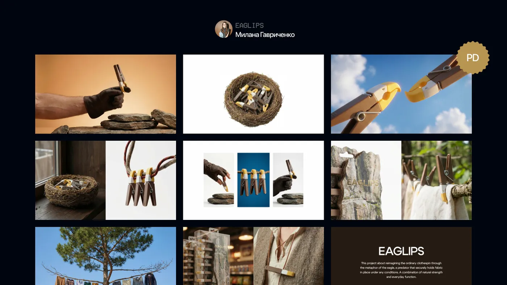
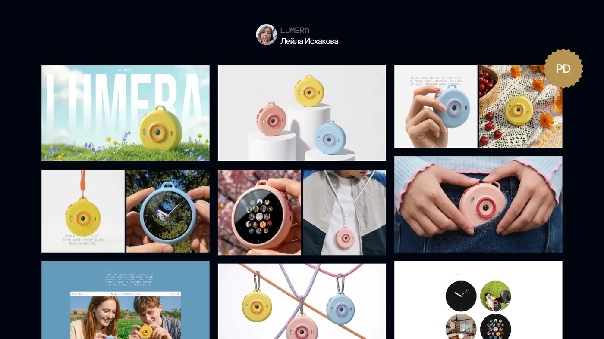
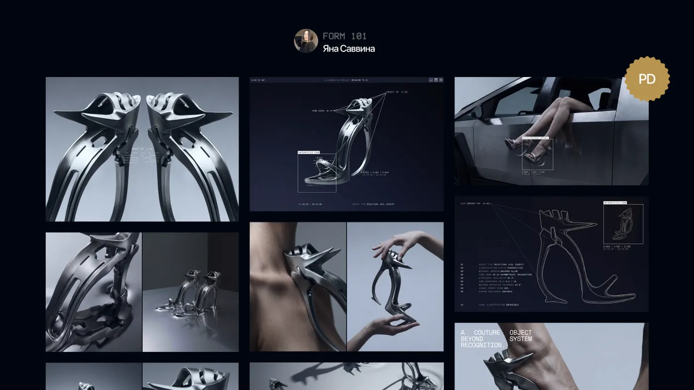
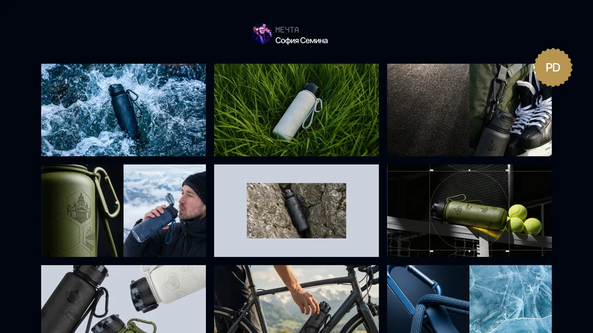
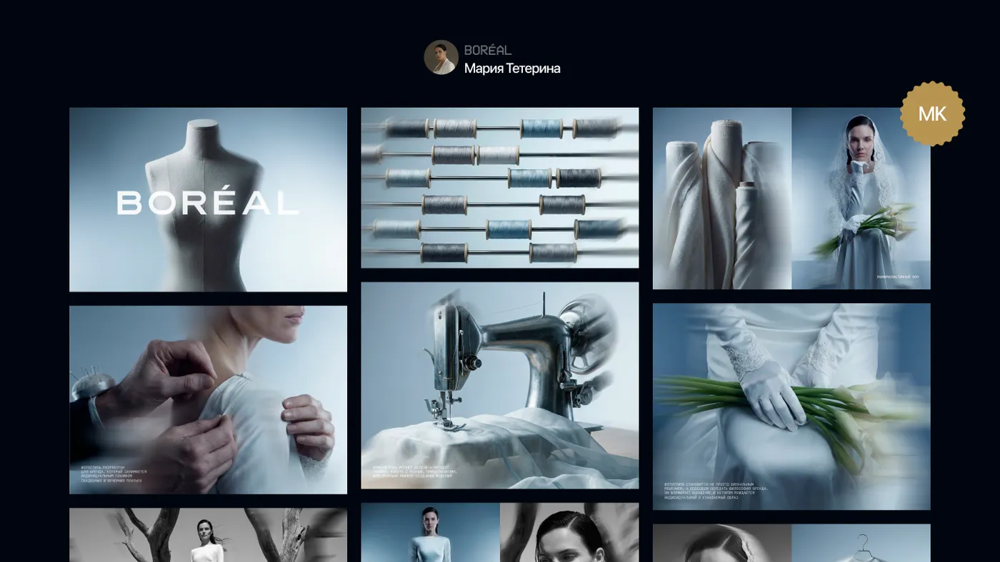
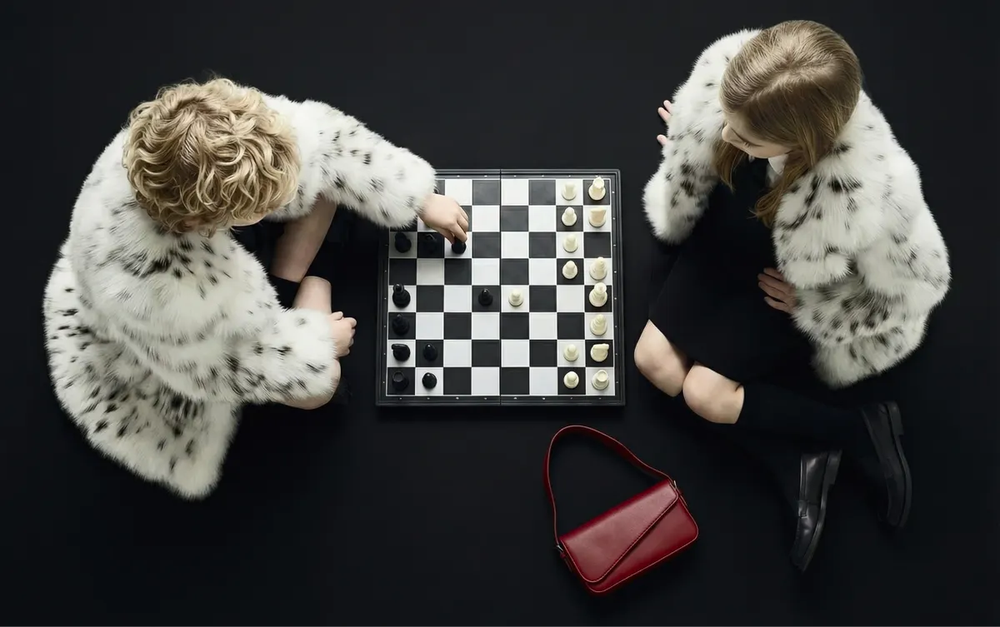
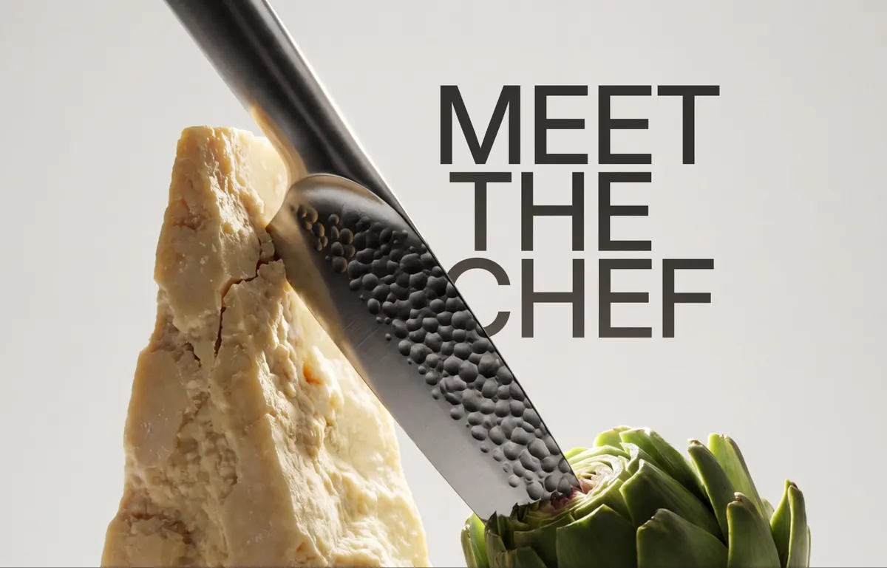
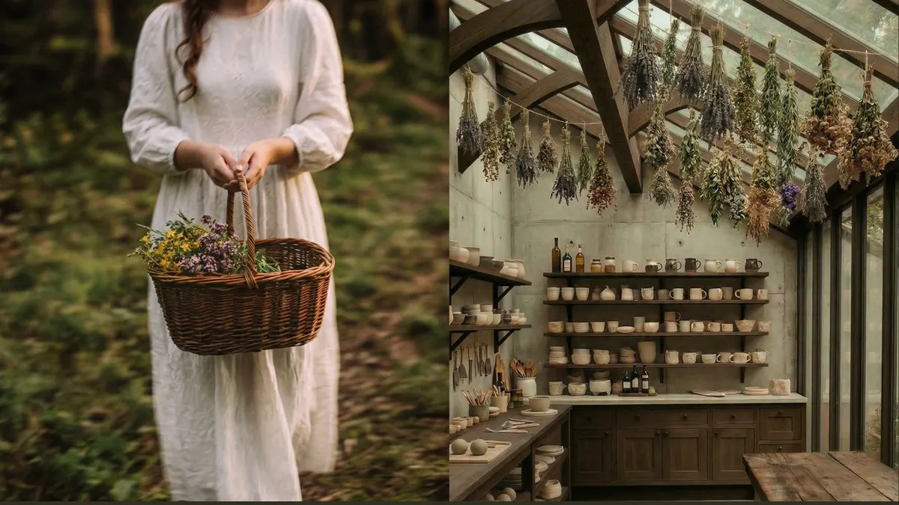
Примерно так проходят путь до первого заказа наши студенты.
Какая нейросеть за что отвечает и чем они отличаются друг от друга.
Генераторов много, а задач всего пять. Под каждую есть свой инструмент. Спорить, какая нейросеть лучшая, — всё равно что спорить, что лучше: кисть или молоток.
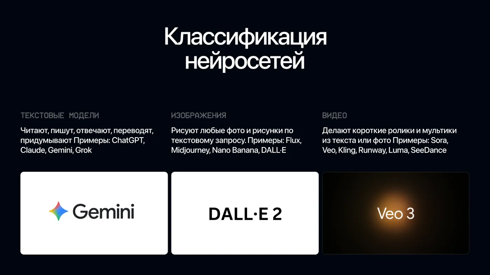
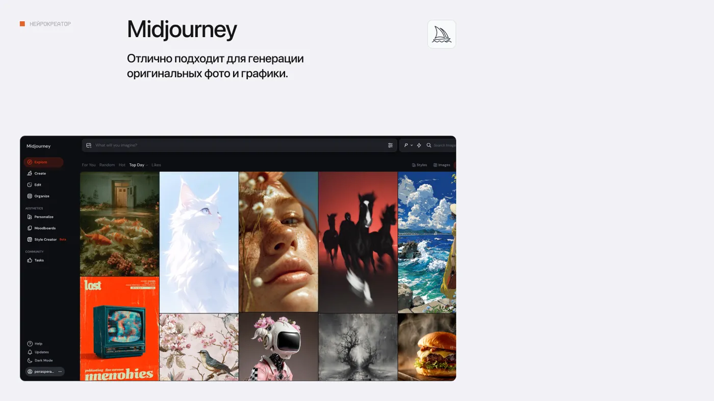
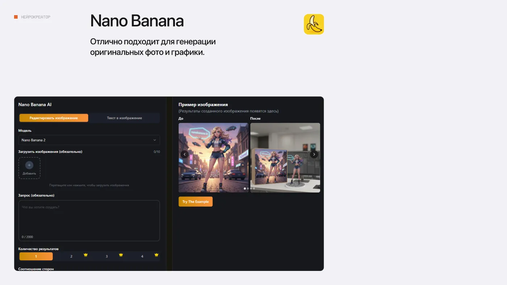
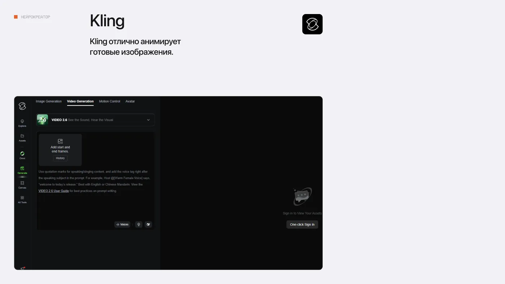
Чем сильна каждая нейросеть, для чего её не брать и сколько она стоит. Цены официальные, в рублях — по курсу около 83 ₽ за доллар с комиссией посредника там, где российские карты не принимают.
| Нейросеть | Задача | Сильная сторона | Не бери для | Сколько стоит | Карта РФ |
|---|---|---|---|---|---|
| Midjourney | Придумать | Стиль, эстетика, key visual, мудборд | Точных правок, текста, сохранения продукта | Basic $10≈ 1 100 ₽ через посредника | нет |
| Nano BananaPro и 2, от Google | Сохранить и поправить | Правка по фото, сборка кадра из референсов, одно лицо и продукт во всей серии, мокапы | Поиска стиля с нуля: без референса картинка часто плоская | В агрегатореSyntx Basic 890 ₽ ≈ 130 картинок | через агрегатор |
| Картинки в ChatGPT | Буквы и схемы | Текст на картинке, схемы, черновики инфографики | Финальной эстетики бренда | В ChatGPT Plus $20≈ 1 900–2 400 ₽ | нет |
| Seedance | Оживить: атмосфера | Несколько шотов подряд, диалог и звук, спокойное движение | Резкой физики удара и контакта | В агрегатореSyntx VIP 3 990 ₽ ≈ 19 клипов | через агрегатор |
| Kling | Оживить: физика | Удар, контакт, спорт, первый и последний кадр | Длинных атмосферных сцен с диалогом | Standard $10≈ 1 100–1 200 ₽ или в агрегаторе | через посредника |
| Suno | Музыка | Трек под ролик по описанию жанра и настроения | Точного попадания в склейки без правок | БесплатноPro $8 ≈ 1 000 ₽ — права на трек для коммерции | через посредника |
| Claude, ChatGPT | Сформулировать | Сценарий, стиль, раскадровка, промпты для других нейросетей | Итоговой картинки: это мозг, а не кисть | БесплатноPro или Plus $20 ≈ 1 900–2 400 ₽ | через посредника |
| CapCut, Figma | Собрать | Монтаж ролика, вёрстка текста и логотипа поверх кадра | Генерации | Бесплатно | не нужна |
«Через агрегатор» — сама модель карты РФ не принимает, но в Syntx или GIVON её можно оплатить картой «Мир» или по СБП. Подробно — в части III.
Модель можно открыть на её родном сайте или через агрегатор — один кабинет, где собрано много моделей с общим балансом. На старте агрегатор удобнее: не нужно оплачивать каждую модель отдельно, и многие принимают российские карты.
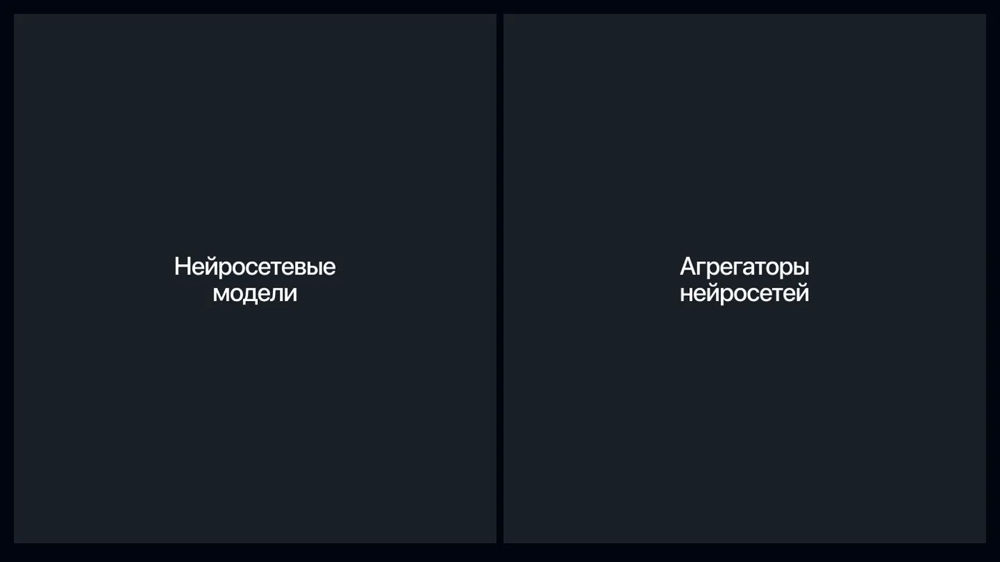
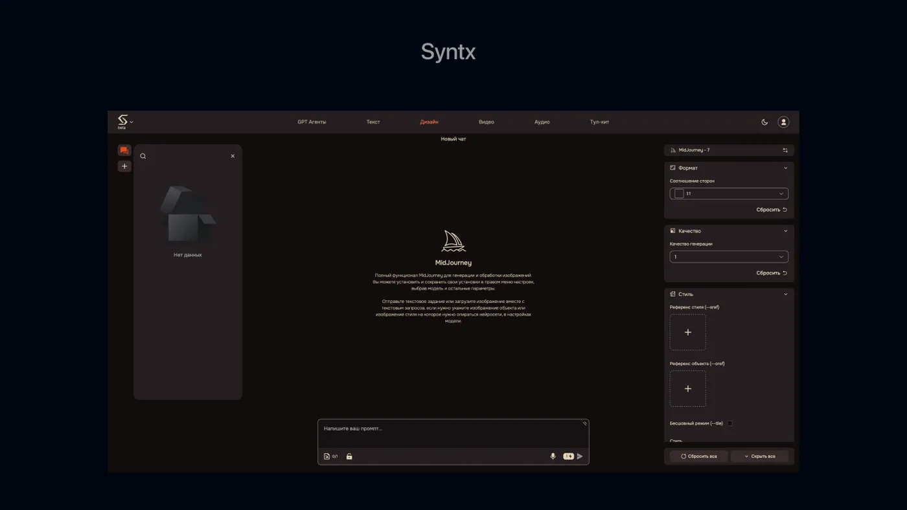
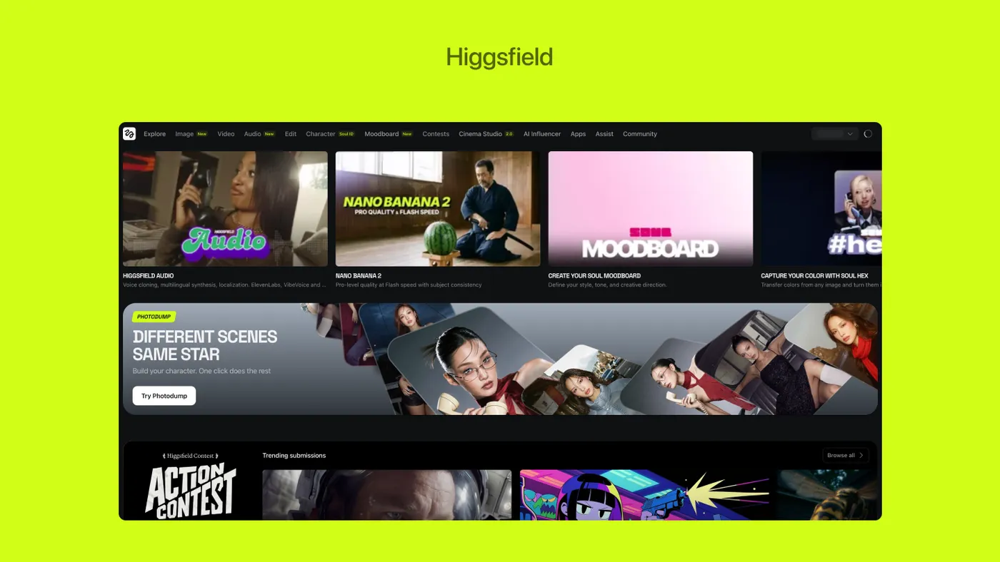
Какой агрегатор взять под свой объём и сколько выйдет в месяц. Цены на 12 октября 2026.
Агрегатор — это сервис, где в одной подписке доступно сразу много нейросетей: Nano Banana, Seedance, Kling и другие. Не нужно оформлять отдельную подписку на каждую модель.
Платишь не за картинку, а за токены или кредиты, и каждая модель тратит их по-своему. Поэтому ниже всё пересчитано на одинаковые условия: картинка 2K в Nano Banana Pro и видео 720p на 5 секунд в Seedance 2.5.
Подписки разобраны для двух типов работы: только картинки и картинки плюс видео. Под свой объём их можно подобрать в калькуляторе в блоке 17.
Месячные планы. В таблице указано, сколько 2K-картинок в Nano Banana Pro даёт план за месяц, если тратить его только на них. Считаются все генерации, включая неудачные. Обычно нужно 60–100 картинок в месяц.
| План | Цена в месяц | Картинок | ₽ за картинку | Карта РФ | Заметка |
|---|
Расчёт: Nano Banana Pro в 2K стоит у Syntx 2 токена, у Higgsfield 2 кредита, у Utopy около 67 токенов, у GIVON около 3 токенов по данным их страницы. GPT-Image 2 у Syntx тратит 6 токенов, то есть втрое больше.
Видео тратит в разы больше токенов, чем картинка. В колонке «80 картинок + 15 клипов» видно, хватит ли плана на типичный месяц работы с роликами.
| План | Цена в месяц | Картинок | Клипов | 80 картинок + 15 клипов | Карта РФ | Заметка |
|---|
«Картинок» и «Клипов» — сколько даёт план, если тратить его только на картинки или только на клипы.
Выбор сервиса часто решает именно оплата.
| Сервис | Оплата | Что учесть |
|---|
Годовой тариф платится сразу за 12 месяцев и в пересчёте на месяц стоит на 15–20% дешевле. Он выгоден, только если ты будешь пользоваться сервисом не меньше 10 месяцев из 12.
| План | В месяц, помесячно | В месяц, при оплате за год | Экономия | Платишь сразу |
|---|
У годовых планов Utopy и Syntx весь пакет токенов выдаётся сразу. У Higgsfield кредиты годового плана обновляются каждые 30 дней и не копятся.
Считаем два месяца подряд на месячной оплате. Для категории А берём 80 картинок в месяц, для категории Б — 80 картинок и 15 клипов Seedance 2.5.
Категория А · 80 картинок в месяц
| План | 1-й месяц | 2-й месяц | Итого | Заметка |
|---|
Категория Б · 80 картинок и 15 клипов в месяц
| План | 1-й месяц | 2-й месяц | Итого | Заметка |
|---|
Выбери, сколько картинок и клипов тебе нужно в месяц и чем платишь. Калькулятор покажет подходящие месячные планы от дешёвых к дорогим. Если плана немного не хватает, показываем цену с докупкой токенов. Цены примерные.
| План | Цена в месяц | Уйдёт плана | Хватит? | Заметка |
|---|
Мы — студия дизайна Perasperadastra. Работали с Яндексом, ТБанком, Альфой, Сбером, «Победой», Музеем космонавтики, 2ГИС и другими. Делаем UX/UI-дизайн, моушн и работаем с нейросетями.
Ещё у нас есть школа: учим тому, что умеем сами. На курсе Mission to AI за несколько недель собираешь портфолио из коммерческих проектов с нейросетями.